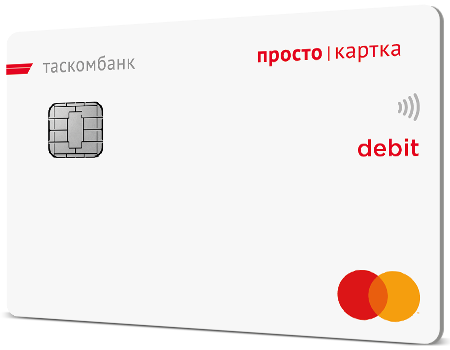

Огляд
«Просто картка» - Проста кредитка з простими умовами!! Користуйся кредитними коштами в режимі 24/7 у будь-якій точці світу з можливістю розрахунків у торгово-сервісних підприємствах та мережі Інтернет. Відновлювальна кредитна лінія надає тобі можливість погашати та знімати кредитні кошти за власними потребами безкоштовно!
- До 100 000 грн кредитного ліміту
- 0 грн - відкриття та обслуговування
- 0 грн – зняття кредитних коштів у банкоматах
- 0 грн – переказ кредитних коштів
- Керування в додатку TAS2U.
Як користуватися кредитною карткою:
-
В ПОС терміналах по всьому світу:
- У процесі активації карти ви отримаєте ПІН-код. Запам'ятайте або запишіть його.
- Головне - не зберігайте ПІН-код поруч з картою і не повідомляйте третім особам.
- Вашу картку приймають платіжні термінали в магазинах по всьому світу. У деяких магазинах вас попросять ввести ПІН-код.
-
Зняття готівки в банкоматах:
- Ви можете знімати готівку в будь-якому банкоматі світу.
- Іноді банк-власник банкомату може брати додаткову комісію за зняття готівки.
- В цьому випадку банкомат заздалегідь попередить вас про це.
- Уважно ознайомтесь з тарифами на зняття готівки в банкоматах за Вашим пакетом послуг.
-
Операції через інтернет:
- Оберіть товар, який бажаєте придбати
- Оберіть спосіб оплати карткою
- Перед покупкою ви отримаєте СМС з кодом підтвердження.Не повідомляйте його нікому.
- Якщо у вас змінився номер телефону, поновіть його в інтернет-банку.
-
Операції з використанням Masterpass:
Masterpass — це надійний цифровий гаманець, де можна безпечно зберігати дані всіх своїх банківських карток різних платіжних систем
Логіном для доступу в цифровий гаманець стає номер мобільного телефону.- Перейдіть на сайт masterpass.com.ua
- Натисніть «Я забув свій пароль/ Я хочу змінити свій пароль»
- Введіть номер мобільного, останні 6 цифр вашої картки ТАСКОМБАНКу та її СVC2/CVV2-код
- Придумайте і введіть пароль для свогогаманця
- Підтвердьте оновлення пароля
- Відтепер ви можете користуватися Masterpass: розраховуватись онлайн і додавати інші картки до гаманця!
| Спосіб | Опис |
|---|---|
| Через касу в відділеннях банку | Для погашення досить надати касирові Вашу карту для її поповнення через POS-термінал,або надати реквізити рахунку(2620...) |
| Через ПТКС Банку в відділеннях |
Кредитну карту Ви можете погасити шляхом поповнення:
|
| Інтернет банкінг TAS2U |
Ви можете оплатити платіж по кредиту шляхом перерахування коштів з будь-якого власного рахунку, відкритого в Банку(2600...)
|
| Через Контакт-центр банку |
Ви можете оплатити платіж по кредиту шляхом перерахування коштів з будь-якого власного рахунку, відкритого в Банку, зателефонувавши в Контакт-Центр Банку. |
| Переказ з картки на карту через Р2Р-сервіси |
Послуга Р2Р дозволяє Вам здійснити переказ коштів на кредитну карту, з іншої банківської карти, випущеної в будь-якому банку України |
| Будь-які банківські установи України |
Ви можете здійснити переказ коштів через касу відділення будь=якого банку України, використовуючи такі реквізити:
|
Cсилка на офіційно сайт тут